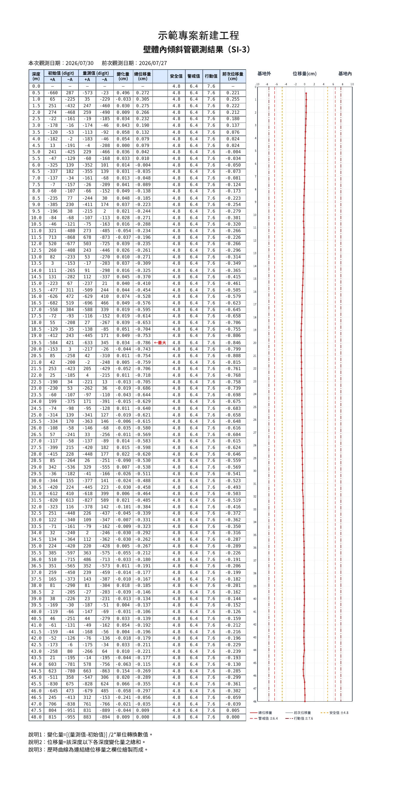
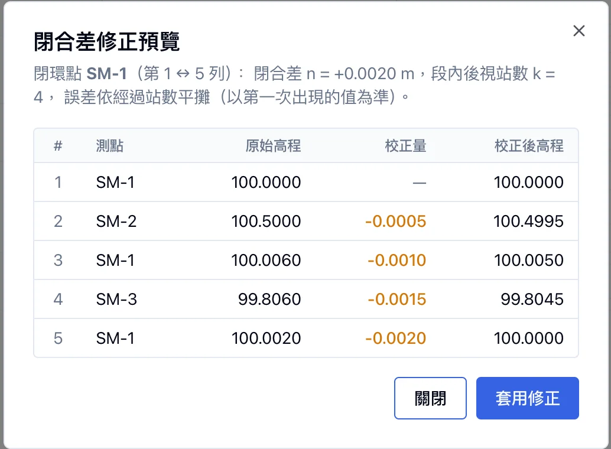

營造監測工程報表管理系統
營造監測顧問公司的內部系統：工程師在工地填量測讀數或上傳監測儀器輸出檔，系統自動計算沉陷、水位、應力、位移與警戒狀態，並以模板一鍵產出週報／月報 PDF，取代原本散落各處的 Excel 手工流程。
這是什麼
客戶是一家營造監測顧問公司，承接建築工地的安全監測：定期量測沉陷、隆起、水位、鋼筋應力、支撐應變、傾斜管等儀器，計算是否超過警戒值，每週每月出報告給業主。過去整個流程跑在 Excel 上，問題很具體：
| 過去 | 現在 |
|---|---|
| 檔案散在個人電腦與信件，版本對不齊 | 數據集中保存，全專案即時同步 |
| 沉陷量、與前次差值都要自己算、自己核 | 只填量測原始值，計算全部自動 |
| 報告圖表逐張手畫，每人格式不同 | 選模板一鍵產出 PDF，格式統一 |
| 檔案誤刪、覆蓋找不回 | 刪除可復原，每日異地備份 |
| 誰改了哪個數字沒有紀錄 | 每筆填寫與修改都有操作紀錄 |
使用者是公司內的工程師、主任到經理，分 7 種角色。工地端用手機填讀數，辦公室端用電腦產報告。系統涵蓋 16 種監測數據類別：10 種人工填報、2 種自動化 Excel 匯入、4 種自動化 .dat 匯入。
系統長什麼樣
照使用流程排序：填報 → 自動化匯入 → 報告編輯 → PDF 成品 → 輔助計算 → 稽核。截圖內的專案名與帳號已替換為示範資料。






架構
瀏覽器（手機現場填 / 電腦產報告） │ TanStack Query 樂觀更新 ▼ Vercel · Next.js 16 ── Server Actions / middleware 登入牆 │ │ ▼ ▼ Supabase Railway · Gotenberg Postgres 17 (Drizzle) 常駐 Chromium，HTML → PDF Auth / Storage / Realtime │ ▼（每日 03:00） GitHub Actions → Cloudflare R2（DB dump，保留 90 天）
主體是 serverless：Next.js 部署在 Vercel，Server Actions 直接以 pg Pool 連 Supabase Postgres，不另做 REST 層；認證走 middleware 全站登入牆。整個系統唯一的常駐容器是 PDF 服務，獨立出來是為了避開 serverless 的冷啟動、執行時間上限，以及 headless Chromium 沒有中文字型的問題。多人同時填同一張讀數表靠 Supabase Realtime broadcast 同步，寫入帶樂觀鎖。備份由 GitHub Actions 每日 dump 到另一家雲端，不依賴平台內建備份。
| 前端 | Next.js 16 App Router、React 19、TypeScript、TanStack Query v5、shadcn/ui + Tailwind CSS 4、react-hook-form + zod、dnd-kit、Recharts、TanStack Virtual |
| 後端 | Next.js Server Actions、Drizzle ORM、PostgreSQL 17 |
| 平台 | Supabase（Postgres / Auth / Storage / Realtime） |
| 報告 | HTML → Gotenberg（Railway）→ PDF；本機 fallback puppeteer-core；pdfjs-dist 拆頁為向量 SVG |
| 文件 | Fumadocs + MDX 內建使用手冊，Orama 中文 tokenizer 全文搜尋 |
| 維運 | Vercel、Railway、GitHub Actions 每日備份 → Cloudflare R2、Vercel Log Drain → Axiom |
| 開發環境 | Supabase CLI 本機 stack（Docker）；本機／UAT／正式三套環境分離；版本化 migration |
技術點與設計決策
1. 讀數表的 Excel 體驗：整批貼上、框選、方向鍵，單一 SQL 寫入
- 問題
- 使用者習慣在 Excel 填讀數，逐格點、逐格存會被嫌慢；且十種監測類別各有一張讀數表。
- 做法
- 共用 hook 處理 TSV 貼上對齊到視覺列、拖曳框選、複製為 TSV、Excel 式方向鍵與 Enter 跨格。寫入端把一次貼上的幾十格按「觸及欄位組合」分群，每群一條
UPDATE … FROM VALUES，30 格貼上等於 1 條 SQL；前端樂觀更新、儲存中疊鎖表 overlay。 - 為什麼
- 十類讀數表共用同一個引擎加 hook 工廠，各類別只宣告「表＋可寫欄位」十行 glue。行為一致，新增類別成本極低。
2. 多人同時填表：Realtime 同步加樂觀鎖，不互相覆蓋
- 問題
- 同一張讀數表常常工地手機與辦公室電腦同時在填。
- 做法
- 每個量測場次一個 Realtime channel，儲存成功後 broadcast；每次寫入帶
expectedUpdatedAt，不符即回報衝突而不覆蓋。 - 為什麼
- 資料正確性優先。衝突明示給使用者，而不是後寫者贏。
3. 報告產生管線：模組 registry → HTML → PDF，圖表全向量
- 問題
- 報告由 50 多種模組任意排列組合；業主要能在 Adobe 編輯 PDF，A3／A4 混印。
- 做法
- 每個模組型別一個宣告式
ModuleDef（label、驗證、日期欄位、HTML render），以satisfies Record<ReportModuleType, ModuleDef>保證漏註冊即編譯錯誤，所有查表由 registry 衍生。圖表用 Recharts 離屏渲染後抓 SVG inline 進 HTML，不截圖成 PNG；每張圖片頁以 per-page@page設為圖片原始 mm 尺寸。 - 為什麼
- 單一來源避免「模組清單／驗證／標題」三處分歧；向量 PDF 可再編輯、印不同紙張不失真。
4. PDF 服務獨立成容器
- 問題
- 在 Vercel serverless 跑 headless Chromium 有冷啟動、沒有 CJK 字型（中文變豆腐）、執行時間上限。
- 做法
- Gotenberg 容器常駐 Railway，route 只轉發 multipart。timeout 鏈 Gotenberg 600s < adapter 620s < Vercel 800s，讓內層先爆才有乾淨錯誤。前端下載中全螢幕 overlay、計時、可取消（AbortController 一路傳到 Gotenberg）。本機無環境變數時自動 fallback 系統 Chrome。
- 為什麼
- 報告可能破百頁，寧可久等也要能完成，而且錯誤要可診斷。
5. 快照原則：舊場次的數字永不因後來的設定改變而變
- 問題
- 初始高程、儀器品牌係數、初始值會被修改或換儀器。若計算時讀「現在的設定」，歷史報告會跟著變。
- 做法
- 建立量測場次當下，把初始高程、係數、初始值抄進每列讀數；計算一律用讀數列自己的快照，改設定只影響之後的新場次。需要回溯修正時走明確的 backfill 腳本。
- 為什麼
- 監測報告有法律文件性質，歷史數據必須可重現。
6. 手填修正量的「沿用」：讀取時動態解析，不抄值
- 問題
- 換儀器後讀數有固定偏移，使用者在某場次填一次修正量，之後場次要自動沿用直到再變。
- 做法
- 資料庫只存使用者真的填的值（null 代表沿用）。單場次用
DISTINCT ON找觀測日期更早的最近一筆非 null；折線圖與月報由伺服器一次抓整條時間線，純函式算出每列有效值。UI 以灰字 placeholder 顯示沿用值。 - 為什麼
- 若建場次時抄值，使用者回頭補填舊場次，後面不會跟著動，而且分不出手填與沿用。
7. 權限：判 permission 而非 role，職級規則單一來源
- 問題
- 7 個角色、11 種權限，「誰能動誰的帳號」有職級規則，前後端都要判。
- 做法
- 後端
requirePermissions([...])與assertProjectAccess，前端hasPermission；職級比較canActOnRank(operator, target)是一個前後端共用的純函式。專案可見性（只看自己參與的案）與權限（能做哪類事）正交；無權限的功能連入口都不渲染。 - 為什麼
- 改規則只動一處，避免散落各處的
role === 'manager'。
8. 稽核日誌的「可追溯」規範
- 問題
- 出 bug 或要還原時，日誌只寫「更新了讀數」不夠。
- 做法
- 每筆 log 分「一行人話摘要」與「多行技術細節」：必記對象 uuid，update 必記 old → new，清單類列明細，cascade 必列連帶對象，刪除記快照。系統層與專案層兩套紀錄，可依人員、分類、關鍵字、時間篩選，條件全送後端配 cursor 分頁。
- 為什麼
- 判準只有一句話：出 bug 或要還原行為時，這筆 log 夠不夠追蹤。
9. 自動化數據匯入：三種格式、可編輯的時間序列矩陣
- 問題
- 監測平台輸出 .xlsx、.dat（TOA5，一檔含四類儀器）、.gkn 三種格式；上傳後還要能改、刪、補列，重複上傳要能選覆寫或略過。
- 做法
- 共用的 xlsx 解析骨架，各類別只宣告 key 欄位。上傳前 dry-run 比對重複筆數（鍵值壓縮 1.1MB → 47KB 以避開 Server Action 1MB 上限）。讀數列是事實來源；共用的時間戳×儀器編輯矩陣採游標分頁加列虛擬化，不把整區間讀進記憶體。刪讀數後自動清孤兒上傳紀錄。
- 為什麼
- 三套類別共用一份純邏輯（patch 規劃、audit 行產生），新增第四類只寫宣告。
10. 專案級顯示設定：單位、小數位、名稱可自訂，資料庫永遠存 canonical
- 問題
- 不同案子沉陷量要 mm 或 cm，警戒值要叫「警示值」，環片編號要叫「里程」。
- 做法
- override-only 表只存與預設不同的值（等於預設即刪列），
resolveXxx()純函式解析。數值只在顯示與輸入層換算，達標判定仍比 canonical 值；預設路徑的輸出逐字元與改版前相同。 - 為什麼
- 顯示自訂不污染識別欄與計算。
其他
- 手稿閉合差平差：錨點加多段平差，順序由系統決定（內環先算），同一組合結果唯一；純 SVG 路線示意圖顯示走訪關係。手稿只是輔助計算，不取代測量員判斷。
- 表格分頁與表頭防溢出：分頁用平均分配（23 列 → 12＋11，不是 22＋1）；表頭依 CJK／ASCII 字寬估算求統一字級，放不下才換行、絕不溢出。全域規則一次治本。
- 維運：GitHub Actions 每日 dump → Cloudflare R2 保留 90 天、還原流程實測過、成本 0；Vercel Log Drain → Axiom 儀表板；migration 版本化、禁止直接 push schema。
- 工程紀律：跨類別重複邏輯一律抽引擎＋工廠＋宣告式 glue；計算公式、判定規則、分頁都是純函式單一來源；報告會消費的查詢
staleTime: 0；單檔小於 1000 行。
規模
| 開發期間 | 2026-02-08 ～ 2026-10-29（持續中） |
| commits | 430 |
| TypeScript | 624 檔，約 10.4 萬行 |
| 資料庫 | 62 張表（每表一個 schema 檔）、69 個 migrations |
| 監測數據類別 | 16（10 種人工填報、2 種自動化 Excel、4 種自動化 .dat） |
| 讀數表類別 | 10，共用同一套 Excel 式批次引擎 |
| 報告模組型別 | 56 |
| 角色 | 7 |
| 內建使用手冊 | 28 個內容頁（MDX） |
我負責的範圍
從頭到尾一個人：需求訪談（跟測量員與經理一起過每種儀器的填報與出報告流程）→ 資料模型與架構設計 → 前後端開發 → 部署與維運（Vercel、Supabase、Railway、每日備份、日誌監控）→ 內建使用手冊 28 頁 → 兩場教育訓練投影片約 60 頁 → 正式環境 cutover。原始碼為客戶產品，本頁只放截圖與描述。